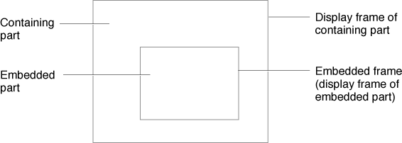
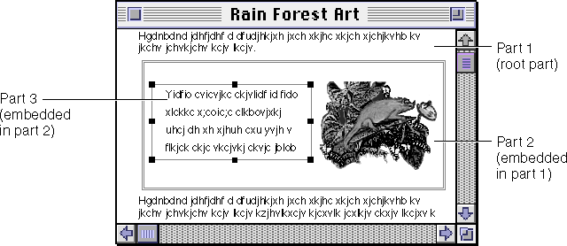
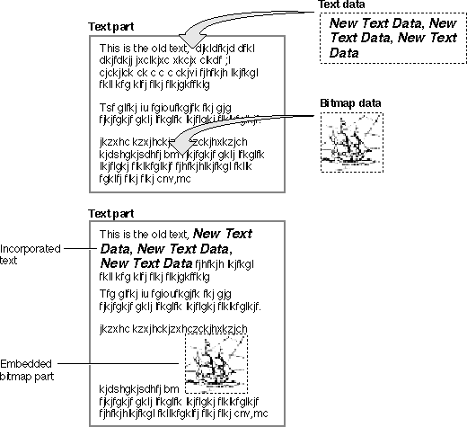
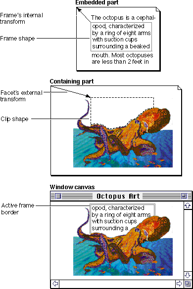
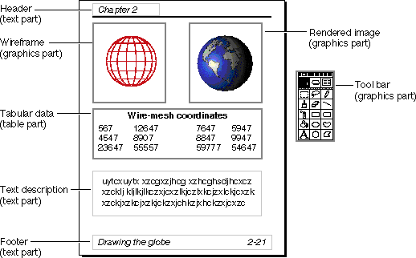
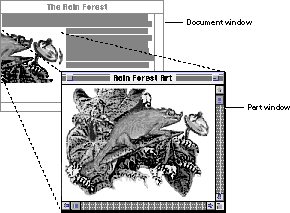
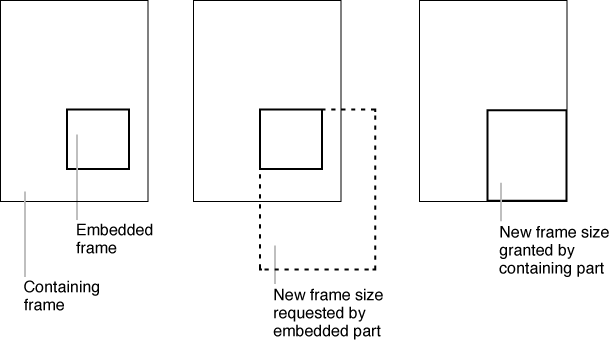

Parts
OpenDoc uses a few simple ideas to create a structure that integrates a wide range of capabilities. The basic elements are documents, their parts, their frames, and the part-editor code that manipulates them. Those elements, represented in a set of object-oriented class libraries, define a number of object classes. The classes provide interoperability protocols that allow independently developed software components to cooperate in producing a single document for the end user. Through the class libraries, these cooperating components share user-
interface resources, negotiate document layout onscreen and on printing devices, share storage containers, and create data links to one another.This section describes what part editors, parts, and frames are and how parts are categorized, drawn, and stored in documents. It also describes the two different kinds of part editors, and points out that you can develop other kinds of OpenDoc components as well.
Documents, Parts, and Embedding
Documents, not applications, are at the center of OpenDoc. Individual documents are not tied to individual applications. In creating OpenDoc documents, collections of software components called part editors replace the conventional monolithic applications in common use today. Each part editor is responsible only for manipulating data of one or more specific kinds in a document.The user does not directly launch or execute part editors, however. The user works with document parts (or just parts), the pieces of a document that, when executing, include both the document data and the part-editor code that manipulates it. See Figure 1-2.
Figure 1-2 Parts in an OpenDoc document
A part can exist as document on its own, or it can be embedded in other parts, allowing the user to create documents of arbitrary complexity.Parts and the User
In general, a user can perform all the tasks of an application by manipulating a part instead of separately launching or executing its controlling software. For example, a user can create and use a spreadsheet part that looks and acts just like a spreadsheet created by a spreadsheet application. However, there are four main differences between a document consisting of parts and a document created by a conventional application:
- An OpenDoc document is built and manipulated differently. OpenDoc users can assemble a document out of parts of any kind--using their graphics part editor of choice, for example, to embed illustrations within a word-processor document. Developers can write or assemble such groups of part editors for sale as integrated packages, or users can purchase individual part editors separately.
- New parts of any kind can be added to an OpenDoc document. The user can purchase additional part editors--for example, a charting utility to accompany a spreadsheet--and immediately use them, for example, to embed charts into existing documents.
- In editing, copying, or pasting a part, the user need not be aware of the code that is executing. In fact, the user cannot directly launch a part editor at all. The user manipulates the part data itself, within the context of the document. (It is not necessary to open the part into a separate window for editing.) The document containing that part is opened and closed independently of the part's part editor.
- The user can replace part editors. If the editor for a specific kind of part in a document is not available, or if the user prefers to use a different part editor--for example, to replace one charting utility with another--the user can specify that the new editor be used with all parts created under the previous editor. Thus, the user has the freedom to work with all of the editors of a package or replace any of them with others that the user prefers.
Part Editors
A part editor has fewer responsibilities than a conventional application. Each part editor mustAt runtime, a part is the equivalent of an object-oriented programmatic object in that it encapsulates both state and behavior. The part data provides the state information, and the part editor provides the behavior; when bound together, they form an editable object. As with any programmatic object, only the state is stored when the object is stored. Also, multiple instantiations of an object do not mean multiple copies of the editor code; one part editor in memory serves as the code portion for any number of separate parts that it edits.
- display its part, both onscreen and when printing
- edit its part, by changing the state of the part in response to events caused by user actions
- store its part, both persistently and at runtime
OpenDoc dynamically links part editors to their parts at runtime, choosing an editor based on the kinds of data that a part contains. Dynamic linking is necessary for a smooth user experience because any sort of part might appear in any document at any time.
Other Software Components
A user can apply several kinds of OpenDoc components to compound documents. A part editor, as noted earlier, is a full-featured OpenDoc component; it allows the creation, editing, and viewing of document parts of a particular kind. Part editors are the functional replacements for conventional applications; they represent the developer's primary investment. Like applica-
tions, part editors are sold or licensed and are legally protected from unauthorized copying and distribution. On the Mac OS platform, a part editor's name, copyright statement, and credits can appear in an "About..." dialog box accessible through the Apple menu.A part viewer is a special variety of part editor that can display and print a part of a particular kind but cannot be used to create or even edit such a part. To enhance the portability of OpenDoc compound documents across machines and across platforms, developers are expected to create and freely distribute part viewers without restriction, for all kinds of parts that they support. A part viewer is really just a part editor with its editing and part-creation capability removed; the developer can create both from the same code base.
Wide availability of a particular part viewer encourages purchase and use of its equivalent part editor, because users will know that other users will be able to view parts created with that editor. (In some cases it is possible to view a part even when neither its editor nor viewer is present; see the discussion of translation in the section "Part Data Types".)
The OpenDoc architecture also allows for the development of software components that, unlike part editors, are not directly involved in storing, editing, and displaying document parts. Special components called services, for example, could provide software services to parts or documents. Spelling checkers or database-access tools, when developed as services, could increase the capabilities of part editors. Users could apply them to a single part, to all the parts of a document, or even across separate documents.
Version 1.0 of OpenDoc provides complete support for part editors and part viewers. Future releases may explicitly support services and other types of component software as well.
Frames and Embedding
Parts in an OpenDoc document are hierarchically arranged. The logical structure of a document, which underlies its visual presentation, consists of the embedding relationships among its parts and their frames.Parts are displayed in frames, bounded areas that display a part's contents. Frames are commonly rectangular, but may be any shape. The display frame of one part--the frame within which the part is viewed--can itself be embedded within the content of another part. Figure 1-3 shows such a relationship: the inner frame is an embedded frame of the outer part, the inner part is an embedded part of the outer part, and the outer part is the containing part of the inner part.
Figure 1-3 A containing part and an embedded part

An embedded part is logically contained in its containing part, just as its frame is visually embedded in the containing part's frame. The containing part, how-
ever, largely ignores the characteristics of its embedded parts. The containing part treats its embedded frames as regular elements of its own content; it moves, selects, deletes, or otherwise manipulates them, without regard to what they display. The embedded part itself takes care of all drawing and event handling within an embedded frame.Every document has a single part at its top level, the root part, in which all other parts of the document are directly or indirectly embedded. The root part controls the basic layout structure of the document (such as text or graphics) and the document's overall printing behavior. Figure 1-4 shows an example of the relationships of the root part and two embedded parts:
Each embedded part is displayed within its frame, which is embedded at some location in the containing part's content. (See Figure 1-11 for an explanation of the visual characteristics of the frame borders.)
- Part 1, a text part, is the root part.
- Part 2, a graphics part, is embedded in part 1.
- Part 3, another text part, is embedded in part 2.
Figure 1-4 Parts and frames in a document

Because it can contain embedded frames displaying any kind of content, the document is not a monolithic block of data under the control of a single application. It is instead composed of many smaller blocks of content controlled by many smaller software components. In large part, OpenDoc exists to provide the protocols that keep the components from getting in each other's way at runtime and to keep documents editable and uncorrupted.All parts can be embedded in other parts, and every part must be able to function as the root part of a document. However, not all parts must have the ability to embed other parts; simple or specialized utilities such as clocks or sound players may have no reason to contain other parts. Such parts are called noncontainer parts (or monolithic parts); they can be embedded in any part, but they cannot embed other parts within themselves. Parts that can embed as well as be embedded are called container parts. It is somewhat simpler to write an editor for a noncontainer part than for a container part, although container parts provide a far more general and flexible user experience. Unless embedding makes absolutely no sense for your purposes, you should create part editors that support embedding.
- Parts can have more than one display frame
- A part embedded in a document is not restricted to appearing in a single frame. Parts can have multiple frames, displaying either duplicate views or different aspects of the same part. See "Presentation" for more information.

Part Data Types
Fundamental to the idea of a compound document is that it can hold different types of data. Each part editor can manipulate only its own data, called its intrinsic content. For a simple bitmap-drawing part, for example, the elements of its intrinsic content may be bitmaps; for a simple text part, they may be characters, words, and paragraphs. If a part contains an embedded part, that embedded content is manipulated by its own part editor. No part editor is asked to manipulate the content elements of any part whose data it does not understand.OpenDoc supports both specific and general classifications of data type, so that it may associate parts with specific part editors as well as well as with general classes of part editors when appropriate.
Part Kind
Different parts in a document hold data of different purpose and different format, understandable to different part editors. For meaningful drawing and editing to occur, OpenDoc must be able to associate a part editor only with data that the editor can properly manipulate.OpenDoc uses the concept of part kind, a typing scheme analogous to file type, to determine what part editor to associate with a given part in a document. Because OpenDoc documents are not associated with any single application, a file type is insufficient in this case; each part within a document needs its own "type," or in this case, part kind.
Part kinds are specified as ISO strings, null-terminated 7-bit ASCII strings. A part kind specifies the exact data format manipulated by an editor; it may have a name similar to the editor name, such as "SurfDraw" or "SurfBase III", although names more descriptive of the creator and the specific data format itself, such as "SurfCorp:Movie:QuickTime", are preferable. (The user of such a part would see a different but related string describing the part kind, which in this case might be "SurfTime movie".)
Part-editor developers define the part kinds of their own editors. A single editor can manipulate more than one part kind, if it is designed to so, and a single part can be stored with multiple representations of its data, each of a different part kind. All parts created by an editor initially have its part kind (or kinds), although that can change; see "Changing Part Editors".
Part Category
The concept of part kind does not address the similarities among many data formats. For example, data stored as plain ASCII or Unicode text could conceivably be manipulated by any of a number of part editors. Likewise, video data stored according to a standard might be manipulated by many different video editors. Furthermore, text that closely resembles ASCII or Unicode, and stored video that adheres in all but a few details to a particular standard, might nevertheless be editable or displayable to some extent by many text editors or video editors.It might be unduly confining to restrict the editing or display of a part of a given kind to the exact part editor that actually created it. Unless the user has every part editor that created a document, the user cannot edit or even view all parts of it. Instead, OpenDoc facilitates the substitution of part editors by defining part category, a general description of the kind of data manipulated by a part editor. When users speak of a "text part" or a "graphics part," they are using an informal designation of part category.
Like part kinds, part categories are specified as ISO strings. Part categories have broad designations, such as "plain text", "styled text", "bitmap", or "database". Part-editor developers work with Component Integration Laboratories (CI Labs), a consortium created to coordinate cross-platform OpenDoc development, to define the list of part categories recognized by OpenDoc. See "Cross-Platform Consistency and CI Labs" for more information on CI Labs. See Table 11-2 for a list of defined part categories.
Each part editor specifies the part categories that it can manipulate. For each defined part category (such as "plain text") the user can then specify a default editor (such as "SurfWriter 3.0") to use as a default with any part in that category whose preferred editor--the part editor that created it or last edited it--is missing.
Embedding Versus Incorporating
When the user pastes data into a document, the pasted data can either be incorporated into the intrinsic content of the destination part (the part receiving the data), or it can become a separate embedded part. As Figure 1-5 shows, the destination part--the part receiving the data--decides whether to embed or incorporate the data. It bases the decision on how closely the part kind and category of the pasted data match the part kind and category of the destination content.Figure 1-5 Embedding versus incorporating pasted data

This is how the decision is made:In all of these cases, it is the destination part that decides whether to embed or to incorporate. The user can guide that decision by manually forcing a paste to be an incorporation or an embedding; see "Handling the Paste As Dialog Box" for more information.
- If the part kinds of pasted data and destination match, the data should be incorporated; the SurfWriter text shown in Figure 1-5, for example, is pasted into the intrinsic data of the SurfWriter (text) part.
- If the part categories are different, the pasted data should be embedded; the SurfPaint bitmap shown in Figure 1-5, for example, is embedded in the SurfWriter text part.
- If the part categories are the same but the part kinds are different (a possibility not shown in Figure 1-5), the destination part should, if possible, convert the data to its own kind and then incorporate it. Of course, if the destination part cannot read the part kind of the pasted data, it should embed it as a separate part.
- Note
- For the data being pasted, part kind and part category refer to the kind and category of the outermost, or enclosing, data. There may be any number of parts embedded within that data, of various kinds and categories. Those parts are always transferred as embedded parts, regardless of whether the outermost data is itself incorporated or embedded.
Changing Part Editors
When a part editor stores or retrieves the data of its part, it can only manipulate it using the part kind or kinds that the editor understands and prefers. Furthermore, different systems may have different sets of available part editors. Therefore, the editor assigned to a part can change over the part's lifetime.For example, the user might open a document (or paste data) containing a part of a kind for which the user does not have the original part editor. In that case, OpenDoc substitutes the user's default editor for that part kind or part category (if the default editor can read any of the part's existing part kinds). If the default editor cannot read the part, OpenDoc searches for an editor that can. Once OpenDoc locates and assigns a new editor to the part and the user saves changes, the new editor then becomes the part's preferred editor, and it subsequently stores the part's data using its own part kinds. See the section "Binding" for more detailed information on this process.
Lack of a part editor never prevents a user from opening a document. If no editor on the user's system can read any of the part kinds in a part, the part contents remain unviewable and uneditable, and its preferred part editor and part kinds do not change. Nevertheless, OpenDoc still displays an icon repre-
senting the part within the area of the part's frame, and the user may be given the option of translating the data into an editable format, as described next.Translation
Changing the part editor for a part often means changing data formats and therefore may involve loss of information or may not be directly possible. For example, any text editor may be able to display and edit plain ASCII text without loss, but a sophisticated word processor may be able to read another word processor's data only imperfectly, if at all.Nevertheless, the user can in some cases choose to employ a part editor with a part that the editor cannot directly manipulate. In such a case, OpenDoc or a part editor performs the necessary translation to convert the part into a format usable by the editor. Translation is possible only if the appropriate translator, or filter, is available on the user's machine to perform the translation between part kinds. The fidelity, or quality, of the translation depends on the sophistication of the translators. Translators are platform-specific utilities that are independent of OpenDoc; OpenDoc simply provides an object wrapper for a given platform's translation facilities.
OpenDoc provides support for translation when a document is first opened, during data transfers such as drag and drop, through semantic events, and at any time the user chooses.
Displaying Parts
In preparing a compound document for viewing, two issues are of prime importance: managing the competition for space among the parts of the document, and making provisions for each part to draw itself.OpenDoc provides a platform-independent interface for part editors, although the interface does not include any drawing commands or detailed graphics structures. OpenDoc provides an environment for managing the geometric relationships among frames, and it defines object wrappers for accessing platform-specific graphic and imaging structures.
Drawing Structures
Each part in an OpenDoc document is responsible for drawing its own content only (including, at certain times, the borders of the frames embedded within it). Thus, a part does not draw the interiors of its embedded frames, because they display the content of other parts (which must draw themselves). Drawing a document, therefore, is a cooperative effort for which no part editor is completely responsible; each part editor is notified by OpenDoc when it must draw its own part.Drawing in OpenDoc relies on three fundamental graphics-system-specific structures, for which OpenDoc provides these related objects:
When a part actually draws itself within a frame, it uses an object closely related to the frame. A facet is an object that is the visible representation of a frame (or a portion of a frame) on a canvas. A frame typically has a single facet, but for offscreen buffering, split views of a part, or special graphic effects, it may have more than one.
- Canvas, a description of a drawing environment. In the QuickDraw graphics system on the Mac OS, for example, this object is a wrapper for a graphics port (
GrafPort). A dynamic canvas, like a screen display, can potentially be changed through scrolling or paging; a static canvas, like a printer page, cannot be changed once it has been rendered. OpenDoc allows for different behavior when drawing onto dynamic and static canvases.- Shape, an object that describes a geometric shape. In the QuickDraw graphics system on the Mac OS, this can represent a region or a polygon; in QuickDraw GX, it is equivalent to a shape object.
- Transform, a structure that describes a standard set of 2-dimensional transformations, such as offset, scaling, or rotation. It is equivalent to a mapping in the QuickDraw GX graphics system on the Mac OS.
In general, frames control the geometric relationships of the content that they display, whereas facets control the geometric relationships of frames to their containing frame or window. The facet is associated with a specific canvas, and both frames and facets have associated shapes and transforms. Figure 1-6 summarizes some of the basic relationships among frames, facets, shapes, transforms, and canvas in drawing; for more detail see "Transforms and Shapes".
Figure 1-6 Frames and facets in drawing

The top of Figure 1-6 shows the content area of an embedded part as a page with text on it. The portion of the part that is available for drawing is the portion within the frame shape, assigned to the part by its containing part.
(A part may have more than one frame, but only one is shown here.) The frame's internal transform positions the frame over the part content. (Another shape, the used shape, defines the portion of the frame shape that is actually drawn to; in this case, the used shape equals the frame shape.)The center of Figure 1-6 shows the facet associated with this embedded part's frame. (A frame may have more than one facet, but only one is shown here.) The clip shape of the facet defines where drawing can occur, in relation to the content of the containing part. In this case, the containing part is the root part in a document window, but it could be an embedded part displayed in its own frame. The clip shape is typically similar to the frame shape, except that, as shown in Figure 1-6, it may have additional clipping to account for other embedded parts or for elements of the containing part that overlap it. The facet's external transform positions the facet within the containing part's frame and facet. (Another shape, the active shape, defines the portion of the facet within which the embedded part responds to events; in this case, the active shape equals the frame shape.)
The bottom of Figure 1-6 shows the result of drawing both parts on the window's canvas. The portion of the embedded part defined by the frame is drawn in the area defined by the facet. If this embedded part is the active part, meaning that the user can edit its contents, OpenDoc draws the active frame border around it; the shape of that border equals the facet's active shape.
Presentation
There are many ways that a part editor can draw the contents of a part. A word processor can draw its data as plain text, styled text, or complete page layouts; a spreadsheet can draw its data as text, tables, graphs, or charts; a 3D drawing program can draw its shapes as wireframe polyhedrons, filled polyhedrons, or surface-rendered shapes with specified lighting parameters.For any kind of program, individual frames of a single part can display different portions or different views of its data. For example, in a page-layout part, one frame of a page could display the header or footer, another could display the text of the page, and yet another could show the outline of the document. For a 3D graphics part, different frames could show different views (top, front, side) of the same object. For any kind of program, an auxiliary palette, tool bar, or other set of controls might be placed in a separate frame and be considered an alternative "view" of the part to which it applies.
OpenDoc calls such different part-display aspects part presentations and imposes no restrictions on them. Figure 1-7 shows some examples of different presentations for individual parts in a document. There are only three embedded parts, but two of them have several display frames, each with a different presentation.
Figure 1-7 Several presentations for three parts in a document

Your part editor determines the presentations that its parts can have, and it stores a presentation designation (for your own drawing functions to make use of) in each of your part's frames. You can store other display-related information as the part info data of a frame. Each frame and each facet have the capability to store part info data that you can access; in that data, you can store any useful private information relating the display of your part in that frame or facet. Only you use the part info data of your frames and facets.View Type
OpenDoc does not specify presentation types, but it nevertheless defines some aspects of part display. Each frame has a view type, a designation of the fun-
damental display form of the part in that frame. Basically, view type controls whether a part is to be displayed in icon form or with its contents visible.In most situations in most documents, each part displays its contents, or some portion of its contents, within its frame. However, a part can also display itself as one of several kinds of icons; see Figure 1-8 for examples. Each basic display form (large icon, small icon, thumbnail, or frame) is a separate view type; your part editor stores a designation of the part's view type in each of your part's display frames. A single part can have different view types in different frames.
Figure 1-8 View types for a part
On the desktop and in file directories (folders on the Mac OS), parts are indi-
vidual closed documents and by default have an icon view type. When such a document opens, the part gives its frame a frame view type, and its contents (including embedded parts) then become visible. Nevertheless, open documents can have embedded parts displayed as icons. Keep in mind that a part with an icon view type is not necessarily closed or inactive. A sound part, for example, might have nothing but an icon view type, even when playing its sound.Each containing part specifies, by setting a value in its embedded part's frame, the view type it prefers the embedded part to have. Your container parts can specify the view type for each embedded frame they create; when embedded, your parts should initially display themselves in the view type expected by their containing parts. See, for example, "View Type" and "View Type" for more information and guidelines.
Document Windows and Part Windows
Compound documents are displayed in windows. A document window is a window that holds a single OpenDoc document; that document can contain a single part or many parts. Document windows in OpenDoc are essentially the same as the windows that display a conventional application's documents.An architectural cornerstone of OpenDoc is that it provides in-place editing of all parts in a compound document. Users can manipulate the content of any part, no matter how deeply embedded, directly within the frame that displays the part. Opening a part into a window of its own is not a prerequisite for editing.
Nevertheless, a user might wish to view more of a part than is displayed within a frame. Even if a frame is resizable and supports scrolling of its contents, the user may find it more convenient to view and edit that frame's part separately, in its own window. To support this convenience, OpenDoc allows users to open a separate window, called a part window, which looks similar to a document window. See Figure 1-9 for an example.
Figure 1-9 An embedded frame opened into a part window

Like document windows, part windows can themselves contain embedded parts. But because your part is the root part in any part windows that your part editor creates, you may take a more active role in window handling than you do for your part when it is an embedded part in a document window. See "Creating and Using Windows" for information on handling part windows; see "Viewing Embedded Parts in Part Windows" for guidelines for part-window placement.Frame Negotiation
In a compound document with embedded parts, the embedding hierarchy and the frame locations determine the geometric relationships among parts. Each part controls the positions, sizes, and shapes of the frames embedded within it. If an embedded part needs to change the size of its frame or add another frame, it must negotiate for that change with its containing part. This frame negotiation allows an embedded part to communicate its needs to its containing part; however, the containing part has ultimate control over the sizes and shapes of its embedded frames.Figure 1-10 shows a simple example of frame negotiation. A user edits an embedded part, adding enough data so that the content no longer fits in the embedded part's current frame size. The embedded part requests a larger frame size from the containing part. The containing part can either grant the request or return a different frame size from that requested. In this example, the containing part cannot accommodate the full size of the requested frame and so returns a frame size to the embedded part that is larger than the previous frame size but not as large as the requested one.

The frame-negotiation process is described in more detail in "Frame Negotiation".